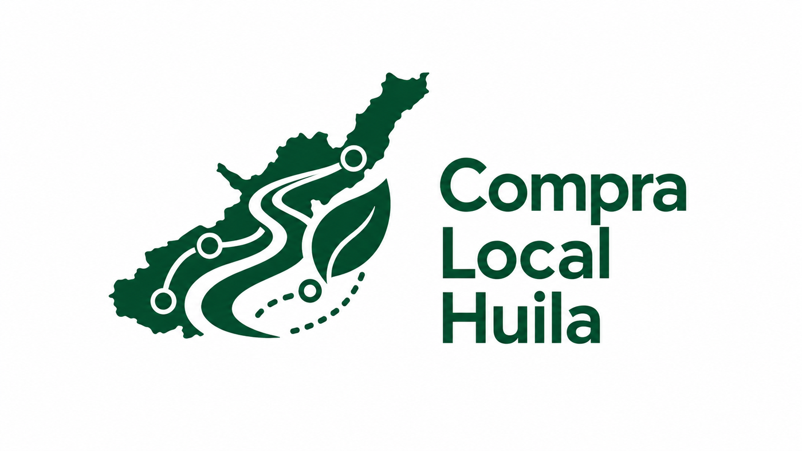
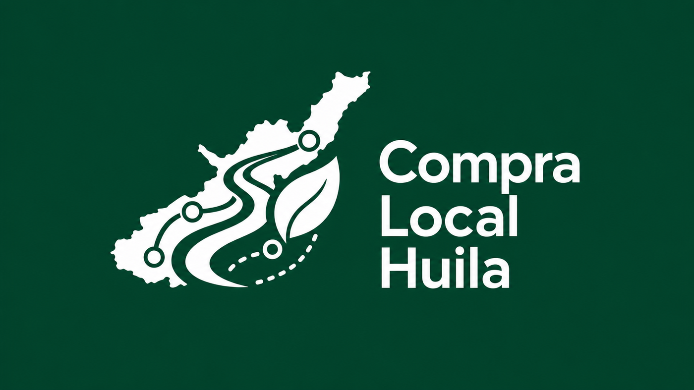

Gobernación del Huila · InfiHuila · Compra Local Huila
Del campo huilense a la mesa pública
COMPAH integra oferta local, demanda institucional, trazabilidad contractual y lectura territorial para convertir la Ley 2046 en seguimiento gerencial.
Meta normativa30%
Compra local mínima sobre recursos destinados a alimentos.
1Registro de oferta local
2Demanda pública
3Compra y soporte
4Validación supervisora
5Reporte gerencial
Identidad visual v2.1
Una marca territorial para dar seriedad, recordación y confianza
La versión 2.1 integra las cuatro aplicaciones del logo Compra Local Huila: isologo, versión horizontal, versión institucional en fondo verde y versión compacta. Su uso refuerza la originalidad del aplicativo sin perder el respaldo de Gobernación del Huila e InfiHuila.

Uso institucionalBanco de oferta local
Productores y organizaciones por municipio, vereda, producto, capacidad y estado documental.
Contratos alimentarios
Control del valor destinado a alimentos, compra local y cumplimiento mínimo normativo.
Validación supervisora
Soportes, observaciones, aprobación de compras, trazabilidad y alertas.
Mapa territorial
Oferta, demanda, brechas y concentración agroalimentaria por municipios del Huila.
Panel ejecutivo
Dashboard gerencial COMPAH
Seguimiento territorial, contractual y normativo de compras públicas locales de alimentos.
Lectura gerencial
Seleccione un KPI, una barra o una alerta para consultar interpretación y acción sugerida.
Cumplimiento por contrato
Meta mínima 30%Top municipios por compra local
Oferta territorialProductos más demandados
Demanda vs ofertaAlertas por tipo
PriorizaciónAlertas prioritarias
Contratos, documentos y trazabilidadTerritorio productivo
Mapa interactivo del Huila
Oferta productiva, demanda institucional y trazabilidad territorial.
Banco de oferta local
Productores y organizaciones
| Actor | Municipio | Tipo | Productos | Capacidad | Estado |
|---|
Catálogo de alimentos
Líneas agroalimentarias priorizadas
Contratos
Contratos alimentarios
Trazabilidad
Compras locales reportadas
| Fecha | Contrato | Productor | Producto | Cantidad | Valor | Estado |
|---|
Supervisión
Validación de soportes
Registro asistido
Nuevo actor COMPAH
Formulario demo para productores, organizaciones, operadores o supervisores.
Reportes